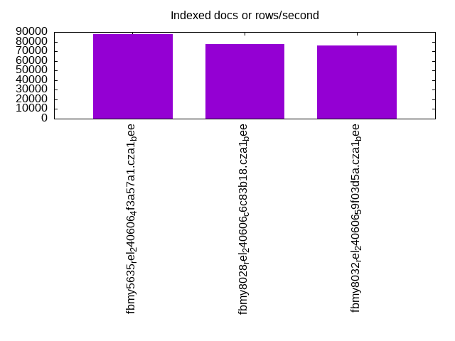

This is a report for the insert benchmark with 20M docs and 1 client(s). It is generated by scripts (bash, awk, sed) and Tufte might not be impressed. An overview of the insert benchmark is here and a short update is here. Below, by DBMS, I mean DBMS+version.config. An example is my8020.c10b40 where my means MySQL, 8020 is version 8.0.20 and c10b40 is the name for the configuration file.
The test server has 8 AMD cores, 16G RAM and an NVMe SSD. It is described here as the Beelink. The benchmark was run with 1 client and there were 1 or 3 connections per client (1 for queries or inserts without rate limits, 1+1 for rate limited inserts+deletes). It uses 1 table. It loads 20M rows per table without secondary indexes, creates 3 secondary indexes per table, then inserts 40m+10m rows per table with a delete per insert to avoid growing the table. It then does 6 read+write tests for 1800s each that do queries as fast as possible with 100,100,500,500,1000,1000 inserts/s and the same for deletes/s per client concurrent with the queries. The database is cached in memory. Clients and the DBMS share one server. The per-database configs are in the per-database subdirectories here.
The tested DBMS are:
The numbers are inserts/s for l.i0, l.i1 and l.i2, indexed docs (or rows) /s for l.x and queries/s for qr100, qp100 thru qr1000, qp1000" The values are the average rate over the entire test for inserts (IPS) and queries (QPS). The range of values for IPS and QPS is split into 3 parts: bottom 25%, middle 50%, top 25%. Values in the bottom 25% have a red background, values in the top 25% have a green background and values in the middle have no color. A gray background is used for values that can be ignored because the DBMS did not sustain the target insert rate. Red backgrounds are not used when the minimum value is within 80% of the max value.
| dbms | l.i0 | l.x | l.i1 | l.i2 | qr100 | qp100 | qr500 | qp500 | qr1000 | qp1000 |
|---|---|---|---|---|---|---|---|---|---|---|
| fbmy5635_rel_240606_4f3a57a1.cza1_bee | 80321 | 87720 | 21727 | 8258 | 1916 | 2694 | 1453 | 2707 | 1446 | 2707 |
| fbmy8028_rel_240606_c6c83b18.cza1_bee | 57471 | 77520 | 19637 | 6988 | 1393 | 2618 | 1507 | 2571 | 1526 | 2496 |
| fbmy8032_rel_240606_59f03d5a.cza1_bee | 53908 | 76046 | 19871 | 6807 | 1225 | 2346 | 1338 | 2389 | 1235 | 2384 |
This table has relative throughput, throughput for the DBMS relative to the DBMS in the first line, using the absolute throughput from the previous table. Values less than 0.95 have a yellow background. Values greater than 1.05 have a blue background.
| dbms | l.i0 | l.x | l.i1 | l.i2 | qr100 | qp100 | qr500 | qp500 | qr1000 | qp1000 |
|---|---|---|---|---|---|---|---|---|---|---|
| fbmy5635_rel_240606_4f3a57a1.cza1_bee | 1.00 | 1.00 | 1.00 | 1.00 | 1.00 | 1.00 | 1.00 | 1.00 | 1.00 | 1.00 |
| fbmy8028_rel_240606_c6c83b18.cza1_bee | 0.72 | 0.88 | 0.90 | 0.85 | 0.73 | 0.97 | 1.04 | 0.95 | 1.06 | 0.92 |
| fbmy8032_rel_240606_59f03d5a.cza1_bee | 0.67 | 0.87 | 0.91 | 0.82 | 0.64 | 0.87 | 0.92 | 0.88 | 0.85 | 0.88 |
This lists the average rate of inserts/s for the tests that do inserts concurrent with queries. For such tests the query rate is listed in the table above. The read+write tests are setup so that the insert rate should match the target rate every second. Cells that are not at least 95% of the target have a red background to indicate a failure to satisfy the target.
| dbms | qr100.L1 | qp100.L2 | qr500.L3 | qp500.L4 | qr1000.L5 | qp1000.L6 |
|---|---|---|---|---|---|---|
| fbmy5635_rel_240606_4f3a57a1.cza1_bee | 100 | 100 | 499 | 499 | 998 | 998 |
| fbmy8028_rel_240606_c6c83b18.cza1_bee | 100 | 100 | 499 | 499 | 998 | 998 |
| fbmy8032_rel_240606_59f03d5a.cza1_bee | 100 | 100 | 499 | 499 | 998 | 998 |
| target | 100 | 100 | 500 | 500 | 1000 | 1000 |
l.i0: load without secondary indexes. Graphs for performance per 1-second interval are here.
Average throughput:
Insert response time histogram: each cell has the percentage of responses that take <= the time in the header and max is the max response time in seconds. For the max column values in the top 25% of the range have a red background and in the bottom 25% of the range have a green background. The red background is not used when the min value is within 80% of the max value.
| dbms | 256us | 1ms | 4ms | 16ms | 64ms | 256ms | 1s | 4s | 16s | gt | max |
|---|---|---|---|---|---|---|---|---|---|---|---|
| fbmy5635_rel_240606_4f3a57a1.cza1_bee | 99.872 | 0.124 | 0.003 | 0.001 | 0.104 | ||||||
| fbmy8028_rel_240606_c6c83b18.cza1_bee | 99.724 | 0.199 | 0.074 | 0.003 | 0.089 | ||||||
| fbmy8032_rel_240606_59f03d5a.cza1_bee | 99.712 | 0.210 | 0.076 | 0.002 | 0.079 |
Performance metrics for the DBMS listed above. Some are normalized by throughput, others are not. Legend for results is here.
ips qps rps rmbps wps wmbps rpq rkbpq wpi wkbpi csps cpups cspq cpupq dbgb1 dbgb2 rss maxop p50 p99 tag 80321 0 0 0.0 35.6 13.4 0.000 0.000 0.000 0.171 7818 22.5 0.097 22 0.7 1.7 0.2 0.104 80854 71323 fbmy5635_rel_240606_4f3a57a1.cza1_bee 57471 0 0 0.0 34.1 10.9 0.000 0.000 0.001 0.194 5937 22.2 0.103 31 0.7 1.9 0.6 0.089 57568 51442 fbmy8028_rel_240606_c6c83b18.cza1_bee 53908 0 0 0.0 33.4 10.3 0.000 0.000 0.001 0.196 5837 21.8 0.108 32 0.7 1.9 0.6 0.079 53940 48571 fbmy8032_rel_240606_59f03d5a.cza1_bee
l.x: create secondary indexes.
Average throughput:
Performance metrics for the DBMS listed above. Some are normalized by throughput, others are not. Legend for results is here.
ips qps rps rmbps wps wmbps rpq rkbpq wpi wkbpi csps cpups cspq cpupq dbgb1 dbgb2 rss maxop p50 p99 tag 87720 0 0 0.0 38.9 14.7 0.000 0.000 0.000 0.172 223 11.8 0.003 11 1.4 2.4 1.7 0.002 NA NA fbmy5635_rel_240606_4f3a57a1.cza1_bee 77520 0 0 0.0 31.3 12.1 0.000 0.000 0.000 0.159 384 11.6 0.005 12 1.4 2.6 2.0 0.003 NA NA fbmy8028_rel_240606_c6c83b18.cza1_bee 76046 0 0 0.0 30.8 11.8 0.000 0.000 0.000 0.160 591 11.7 0.008 12 1.4 2.6 2.1 0.003 NA NA fbmy8032_rel_240606_59f03d5a.cza1_bee
l.i1: continue load after secondary indexes created with 50 inserts per transaction. Graphs for performance per 1-second interval are here.
Average throughput:
Insert response time histogram: each cell has the percentage of responses that take <= the time in the header and max is the max response time in seconds. For the max column values in the top 25% of the range have a red background and in the bottom 25% of the range have a green background. The red background is not used when the min value is within 80% of the max value.
| dbms | 256us | 1ms | 4ms | 16ms | 64ms | 256ms | 1s | 4s | 16s | gt | max |
|---|---|---|---|---|---|---|---|---|---|---|---|
| fbmy5635_rel_240606_4f3a57a1.cza1_bee | 99.800 | 0.194 | 0.004 | 0.002 | 0.086 | ||||||
| fbmy8028_rel_240606_c6c83b18.cza1_bee | 99.661 | 0.272 | 0.065 | 0.002 | 0.088 | ||||||
| fbmy8032_rel_240606_59f03d5a.cza1_bee | 99.650 | 0.279 | 0.071 | 0.001 | 0.078 |
Delete response time histogram: each cell has the percentage of responses that take <= the time in the header and max is the max response time in seconds. For the max column values in the top 25% of the range have a red background and in the bottom 25% of the range have a green background. The red background is not used when the min value is within 80% of the max value.
| dbms | 256us | 1ms | 4ms | 16ms | 64ms | 256ms | 1s | 4s | 16s | gt | max |
|---|---|---|---|---|---|---|---|---|---|---|---|
| fbmy5635_rel_240606_4f3a57a1.cza1_bee | 99.787 | 0.200 | 0.011 | 0.002 | 0.085 | ||||||
| fbmy8028_rel_240606_c6c83b18.cza1_bee | 99.642 | 0.279 | 0.077 | 0.002 | 0.091 | ||||||
| fbmy8032_rel_240606_59f03d5a.cza1_bee | 99.631 | 0.285 | 0.084 | 0.001 | 0.076 |
Performance metrics for the DBMS listed above. Some are normalized by throughput, others are not. Legend for results is here.
ips qps rps rmbps wps wmbps rpq rkbpq wpi wkbpi csps cpups cspq cpupq dbgb1 dbgb2 rss maxop p50 p99 tag 21727 0 95 0.5 109.4 43.2 0.004 0.025 0.005 2.037 9641 44.3 0.444 163 1.6 3.5 7.2 0.086 23391 4495 fbmy5635_rel_240606_4f3a57a1.cza1_bee 19637 0 87 0.5 110.7 42.6 0.004 0.026 0.006 2.221 8890 45.1 0.453 184 1.8 3.9 7.8 0.088 21126 9339 fbmy8028_rel_240606_c6c83b18.cza1_bee 19871 0 92 0.5 121.2 45.9 0.005 0.027 0.006 2.364 9236 47.1 0.465 190 1.7 3.8 8.4 0.078 20527 15033 fbmy8032_rel_240606_59f03d5a.cza1_bee
l.i2: continue load after secondary indexes created with 5 inserts per transaction. Graphs for performance per 1-second interval are here.
Average throughput:
Insert response time histogram: each cell has the percentage of responses that take <= the time in the header and max is the max response time in seconds. For the max column values in the top 25% of the range have a red background and in the bottom 25% of the range have a green background. The red background is not used when the min value is within 80% of the max value.
| dbms | 256us | 1ms | 4ms | 16ms | 64ms | 256ms | 1s | 4s | 16s | gt | max |
|---|---|---|---|---|---|---|---|---|---|---|---|
| fbmy5635_rel_240606_4f3a57a1.cza1_bee | 0.016 | 99.906 | 0.023 | 0.054 | 0.001 | nonzero | 0.064 | ||||
| fbmy8028_rel_240606_c6c83b18.cza1_bee | 99.823 | 0.089 | 0.082 | 0.005 | nonzero | 0.072 | |||||
| fbmy8032_rel_240606_59f03d5a.cza1_bee | 99.763 | 0.147 | 0.085 | 0.005 | 0.060 |
Delete response time histogram: each cell has the percentage of responses that take <= the time in the header and max is the max response time in seconds. For the max column values in the top 25% of the range have a red background and in the bottom 25% of the range have a green background. The red background is not used when the min value is within 80% of the max value.
| dbms | 256us | 1ms | 4ms | 16ms | 64ms | 256ms | 1s | 4s | 16s | gt | max |
|---|---|---|---|---|---|---|---|---|---|---|---|
| fbmy5635_rel_240606_4f3a57a1.cza1_bee | 99.897 | 0.043 | 0.059 | 0.001 | nonzero | 0.064 | |||||
| fbmy8028_rel_240606_c6c83b18.cza1_bee | 99.594 | 0.314 | 0.086 | 0.006 | nonzero | 0.084 | |||||
| fbmy8032_rel_240606_59f03d5a.cza1_bee | 99.418 | 0.488 | 0.089 | 0.006 | nonzero | 0.075 |
Performance metrics for the DBMS listed above. Some are normalized by throughput, others are not. Legend for results is here.
ips qps rps rmbps wps wmbps rpq rkbpq wpi wkbpi csps cpups cspq cpupq dbgb1 dbgb2 rss maxop p50 p99 tag 8258 0 35 0.2 99.7 36.9 0.004 0.026 0.012 4.580 34153 41.9 4.136 406 1.5 1.5 8.3 0.064 8256 6038 fbmy5635_rel_240606_4f3a57a1.cza1_bee 6988 0 30 0.2 86.5 31.9 0.004 0.026 0.012 4.669 29170 40.4 4.174 463 1.5 1.7 8.7 0.072 7002 5762 fbmy8028_rel_240606_c6c83b18.cza1_bee 6807 0 30 0.2 86.8 31.5 0.004 0.026 0.013 4.744 28638 40.4 4.207 475 1.5 1.7 9.0 0.060 6810 5753 fbmy8032_rel_240606_59f03d5a.cza1_bee
qr100.L1: range queries with 100 insert/s per client. Graphs for performance per 1-second interval are here.
Average throughput:
Query response time histogram: each cell has the percentage of responses that take <= the time in the header and max is the max response time in seconds. For max values in the top 25% of the range have a red background and in the bottom 25% of the range have a green background. The red background is not used when the min value is within 80% of the max value.
| dbms | 256us | 1ms | 4ms | 16ms | 64ms | 256ms | 1s | 4s | 16s | gt | max |
|---|---|---|---|---|---|---|---|---|---|---|---|
| fbmy5635_rel_240606_4f3a57a1.cza1_bee | 14.105 | 71.801 | 14.094 | nonzero | 0.005 | ||||||
| fbmy8028_rel_240606_c6c83b18.cza1_bee | 5.471 | 66.112 | 28.417 | nonzero | nonzero | 0.033 | |||||
| fbmy8032_rel_240606_59f03d5a.cza1_bee | 6.017 | 62.462 | 31.520 | 0.001 | nonzero | 0.033 |
Insert response time histogram: each cell has the percentage of responses that take <= the time in the header and max is the max response time in seconds. For max values in the top 25% of the range have a red background and in the bottom 25% of the range have a green background. The red background is not used when the min value is within 80% of the max value.
| dbms | 256us | 1ms | 4ms | 16ms | 64ms | 256ms | 1s | 4s | 16s | gt | max |
|---|---|---|---|---|---|---|---|---|---|---|---|
| fbmy5635_rel_240606_4f3a57a1.cza1_bee | 99.583 | 0.417 | 0.008 | ||||||||
| fbmy8028_rel_240606_c6c83b18.cza1_bee | 99.444 | 0.500 | 0.056 | 0.018 | |||||||
| fbmy8032_rel_240606_59f03d5a.cza1_bee | 99.417 | 0.500 | 0.083 | 0.018 |
Delete response time histogram: each cell has the percentage of responses that take <= the time in the header and max is the max response time in seconds. For max values in the top 25% of the range have a red background and in the bottom 25% of the range have a green background. The red background is not used when the min value is within 80% of the max value.
| dbms | 256us | 1ms | 4ms | 16ms | 64ms | 256ms | 1s | 4s | 16s | gt | max |
|---|---|---|---|---|---|---|---|---|---|---|---|
| fbmy5635_rel_240606_4f3a57a1.cza1_bee | 99.611 | 0.389 | 0.008 | ||||||||
| fbmy8028_rel_240606_c6c83b18.cza1_bee | 99.528 | 0.444 | 0.028 | 0.018 | |||||||
| fbmy8032_rel_240606_59f03d5a.cza1_bee | 99.528 | 0.417 | 0.056 | 0.019 |
Performance metrics for the DBMS listed above. Some are normalized by throughput, others are not. Legend for results is here.
ips qps rps rmbps wps wmbps rpq rkbpq wpi wkbpi csps cpups cspq cpupq dbgb1 dbgb2 rss maxop p50 p99 tag 100 1916 0 0.0 4.0 0.3 0.000 0.000 0.040 3.380 7451 12.4 3.889 518 1.5 1.5 8.4 0.005 1950 1566 fbmy5635_rel_240606_4f3a57a1.cza1_bee 100 1393 0 0.0 4.4 0.5 0.000 0.000 0.044 4.668 5600 12.6 4.021 724 1.5 1.7 8.8 0.033 1390 1294 fbmy8028_rel_240606_c6c83b18.cza1_bee 100 1225 0 0.0 4.3 0.4 0.000 0.000 0.043 4.227 5144 12.6 4.198 823 1.5 1.7 9.0 0.033 1182 1071 fbmy8032_rel_240606_59f03d5a.cza1_bee
qp100.L2: point queries with 100 insert/s per client. Graphs for performance per 1-second interval are here.
Average throughput:
Query response time histogram: each cell has the percentage of responses that take <= the time in the header and max is the max response time in seconds. For max values in the top 25% of the range have a red background and in the bottom 25% of the range have a green background. The red background is not used when the min value is within 80% of the max value.
| dbms | 256us | 1ms | 4ms | 16ms | 64ms | 256ms | 1s | 4s | 16s | gt | max |
|---|---|---|---|---|---|---|---|---|---|---|---|
| fbmy5635_rel_240606_4f3a57a1.cza1_bee | 6.102 | 93.894 | 0.003 | 0.001 | 0.010 | ||||||
| fbmy8028_rel_240606_c6c83b18.cza1_bee | 99.994 | 0.006 | 0.001 | 0.010 | |||||||
| fbmy8032_rel_240606_59f03d5a.cza1_bee | nonzero | 99.991 | 0.008 | 0.001 | 0.010 |
Insert response time histogram: each cell has the percentage of responses that take <= the time in the header and max is the max response time in seconds. For max values in the top 25% of the range have a red background and in the bottom 25% of the range have a green background. The red background is not used when the min value is within 80% of the max value.
| dbms | 256us | 1ms | 4ms | 16ms | 64ms | 256ms | 1s | 4s | 16s | gt | max |
|---|---|---|---|---|---|---|---|---|---|---|---|
| fbmy5635_rel_240606_4f3a57a1.cza1_bee | 99.528 | 0.472 | 0.009 | ||||||||
| fbmy8028_rel_240606_c6c83b18.cza1_bee | 99.389 | 0.556 | 0.056 | 0.018 | |||||||
| fbmy8032_rel_240606_59f03d5a.cza1_bee | 99.306 | 0.639 | 0.056 | 0.018 |
Delete response time histogram: each cell has the percentage of responses that take <= the time in the header and max is the max response time in seconds. For max values in the top 25% of the range have a red background and in the bottom 25% of the range have a green background. The red background is not used when the min value is within 80% of the max value.
| dbms | 256us | 1ms | 4ms | 16ms | 64ms | 256ms | 1s | 4s | 16s | gt | max |
|---|---|---|---|---|---|---|---|---|---|---|---|
| fbmy5635_rel_240606_4f3a57a1.cza1_bee | 99.611 | 0.389 | 0.009 | ||||||||
| fbmy8028_rel_240606_c6c83b18.cza1_bee | 99.472 | 0.472 | 0.056 | 0.018 | |||||||
| fbmy8032_rel_240606_59f03d5a.cza1_bee | 99.556 | 0.389 | 0.056 | 0.018 |
Performance metrics for the DBMS listed above. Some are normalized by throughput, others are not. Legend for results is here.
ips qps rps rmbps wps wmbps rpq rkbpq wpi wkbpi csps cpups cspq cpupq dbgb1 dbgb2 rss maxop p50 p99 tag 100 2694 23 0.1 4.0 0.4 0.009 0.054 0.040 4.036 11021 13.4 4.091 398 1.5 1.6 8.7 0.010 2653 2445 fbmy5635_rel_240606_4f3a57a1.cza1_bee 100 2618 18 0.1 3.9 0.3 0.007 0.044 0.039 3.149 10861 13.7 4.149 419 1.5 1.8 9.1 0.010 2573 2095 fbmy8028_rel_240606_c6c83b18.cza1_bee 100 2346 17 0.1 4.2 0.4 0.007 0.047 0.042 4.150 9937 13.4 4.235 457 1.5 1.8 9.3 0.010 2333 1934 fbmy8032_rel_240606_59f03d5a.cza1_bee
qr500.L3: range queries with 500 insert/s per client. Graphs for performance per 1-second interval are here.
Average throughput:
Query response time histogram: each cell has the percentage of responses that take <= the time in the header and max is the max response time in seconds. For max values in the top 25% of the range have a red background and in the bottom 25% of the range have a green background. The red background is not used when the min value is within 80% of the max value.
| dbms | 256us | 1ms | 4ms | 16ms | 64ms | 256ms | 1s | 4s | 16s | gt | max |
|---|---|---|---|---|---|---|---|---|---|---|---|
| fbmy5635_rel_240606_4f3a57a1.cza1_bee | 12.054 | 58.449 | 29.497 | nonzero | nonzero | 0.029 | |||||
| fbmy8028_rel_240606_c6c83b18.cza1_bee | 5.889 | 76.690 | 17.420 | 0.001 | nonzero | 0.031 | |||||
| fbmy8032_rel_240606_59f03d5a.cza1_bee | 5.664 | 69.706 | 24.629 | nonzero | nonzero | 0.028 |
Insert response time histogram: each cell has the percentage of responses that take <= the time in the header and max is the max response time in seconds. For max values in the top 25% of the range have a red background and in the bottom 25% of the range have a green background. The red background is not used when the min value is within 80% of the max value.
| dbms | 256us | 1ms | 4ms | 16ms | 64ms | 256ms | 1s | 4s | 16s | gt | max |
|---|---|---|---|---|---|---|---|---|---|---|---|
| fbmy5635_rel_240606_4f3a57a1.cza1_bee | 99.728 | 0.272 | 0.012 | ||||||||
| fbmy8028_rel_240606_c6c83b18.cza1_bee | 99.583 | 0.339 | 0.078 | 0.019 | |||||||
| fbmy8032_rel_240606_59f03d5a.cza1_bee | 99.456 | 0.456 | 0.089 | 0.019 |
Delete response time histogram: each cell has the percentage of responses that take <= the time in the header and max is the max response time in seconds. For max values in the top 25% of the range have a red background and in the bottom 25% of the range have a green background. The red background is not used when the min value is within 80% of the max value.
| dbms | 256us | 1ms | 4ms | 16ms | 64ms | 256ms | 1s | 4s | 16s | gt | max |
|---|---|---|---|---|---|---|---|---|---|---|---|
| fbmy5635_rel_240606_4f3a57a1.cza1_bee | 99.700 | 0.300 | 0.008 | ||||||||
| fbmy8028_rel_240606_c6c83b18.cza1_bee | 99.583 | 0.344 | 0.072 | 0.018 | |||||||
| fbmy8032_rel_240606_59f03d5a.cza1_bee | 99.522 | 0.394 | 0.083 | 0.018 |
Performance metrics for the DBMS listed above. Some are normalized by throughput, others are not. Legend for results is here.
ips qps rps rmbps wps wmbps rpq rkbpq wpi wkbpi csps cpups cspq cpupq dbgb1 dbgb2 rss maxop p50 p99 tag 499 1453 0 0.0 8.5 2.3 0.000 0.000 0.017 4.820 5828 13.6 4.010 749 1.5 1.8 8.6 0.029 1438 1199 fbmy5635_rel_240606_4f3a57a1.cza1_bee 499 1507 0 0.0 8.4 2.3 0.000 0.000 0.017 4.726 6190 13.7 4.107 727 1.5 2.0 9.1 0.031 1502 1135 fbmy8028_rel_240606_c6c83b18.cza1_bee 499 1338 0 0.0 8.3 2.3 0.000 0.000 0.017 4.626 5722 13.7 4.276 819 1.5 2.0 9.1 0.028 1343 1135 fbmy8032_rel_240606_59f03d5a.cza1_bee
qp500.L4: point queries with 500 insert/s per client. Graphs for performance per 1-second interval are here.
Average throughput:
Query response time histogram: each cell has the percentage of responses that take <= the time in the header and max is the max response time in seconds. For max values in the top 25% of the range have a red background and in the bottom 25% of the range have a green background. The red background is not used when the min value is within 80% of the max value.
| dbms | 256us | 1ms | 4ms | 16ms | 64ms | 256ms | 1s | 4s | 16s | gt | max |
|---|---|---|---|---|---|---|---|---|---|---|---|
| fbmy5635_rel_240606_4f3a57a1.cza1_bee | 7.201 | 92.795 | 0.004 | nonzero | 0.005 | ||||||
| fbmy8028_rel_240606_c6c83b18.cza1_bee | nonzero | 99.992 | 0.007 | nonzero | 0.009 | ||||||
| fbmy8032_rel_240606_59f03d5a.cza1_bee | 99.993 | 0.007 | 0.003 |
Insert response time histogram: each cell has the percentage of responses that take <= the time in the header and max is the max response time in seconds. For max values in the top 25% of the range have a red background and in the bottom 25% of the range have a green background. The red background is not used when the min value is within 80% of the max value.
| dbms | 256us | 1ms | 4ms | 16ms | 64ms | 256ms | 1s | 4s | 16s | gt | max |
|---|---|---|---|---|---|---|---|---|---|---|---|
| fbmy5635_rel_240606_4f3a57a1.cza1_bee | 99.678 | 0.322 | 0.013 | ||||||||
| fbmy8028_rel_240606_c6c83b18.cza1_bee | 99.450 | 0.467 | 0.083 | 0.018 | |||||||
| fbmy8032_rel_240606_59f03d5a.cza1_bee | 99.428 | 0.494 | 0.078 | 0.019 |
Delete response time histogram: each cell has the percentage of responses that take <= the time in the header and max is the max response time in seconds. For max values in the top 25% of the range have a red background and in the bottom 25% of the range have a green background. The red background is not used when the min value is within 80% of the max value.
| dbms | 256us | 1ms | 4ms | 16ms | 64ms | 256ms | 1s | 4s | 16s | gt | max |
|---|---|---|---|---|---|---|---|---|---|---|---|
| fbmy5635_rel_240606_4f3a57a1.cza1_bee | 99.683 | 0.317 | 0.012 | ||||||||
| fbmy8028_rel_240606_c6c83b18.cza1_bee | 99.561 | 0.356 | 0.083 | 0.020 | |||||||
| fbmy8032_rel_240606_59f03d5a.cza1_bee | 99.511 | 0.422 | 0.067 | 0.019 |
Performance metrics for the DBMS listed above. Some are normalized by throughput, others are not. Legend for results is here.
ips qps rps rmbps wps wmbps rpq rkbpq wpi wkbpi csps cpups cspq cpupq dbgb1 dbgb2 rss maxop p50 p99 tag 499 2707 0 0.0 8.9 2.2 0.000 0.000 0.018 4.518 11164 14.7 4.124 434 1.5 2.0 8.5 0.005 2653 2429 fbmy5635_rel_240606_4f3a57a1.cza1_bee 499 2571 0 0.0 8.8 2.3 0.000 0.000 0.018 4.644 10789 15.1 4.197 470 1.5 2.1 9.0 0.009 2557 2094 fbmy8028_rel_240606_c6c83b18.cza1_bee 499 2389 0 0.0 8.3 2.2 0.000 0.000 0.017 4.565 10217 14.9 4.277 499 1.5 2.1 9.1 0.003 2381 1950 fbmy8032_rel_240606_59f03d5a.cza1_bee
qr1000.L5: range queries with 1000 insert/s per client. Graphs for performance per 1-second interval are here.
Average throughput:
Query response time histogram: each cell has the percentage of responses that take <= the time in the header and max is the max response time in seconds. For max values in the top 25% of the range have a red background and in the bottom 25% of the range have a green background. The red background is not used when the min value is within 80% of the max value.
| dbms | 256us | 1ms | 4ms | 16ms | 64ms | 256ms | 1s | 4s | 16s | gt | max |
|---|---|---|---|---|---|---|---|---|---|---|---|
| fbmy5635_rel_240606_4f3a57a1.cza1_bee | 12.476 | 66.991 | 20.522 | 0.010 | 0.001 | 0.033 | |||||
| fbmy8028_rel_240606_c6c83b18.cza1_bee | 4.709 | 74.611 | 20.679 | nonzero | nonzero | 0.036 | |||||
| fbmy8032_rel_240606_59f03d5a.cza1_bee | 5.092 | 67.094 | 27.813 | 0.001 | nonzero | 0.032 |
Insert response time histogram: each cell has the percentage of responses that take <= the time in the header and max is the max response time in seconds. For max values in the top 25% of the range have a red background and in the bottom 25% of the range have a green background. The red background is not used when the min value is within 80% of the max value.
| dbms | 256us | 1ms | 4ms | 16ms | 64ms | 256ms | 1s | 4s | 16s | gt | max |
|---|---|---|---|---|---|---|---|---|---|---|---|
| fbmy5635_rel_240606_4f3a57a1.cza1_bee | 99.686 | 0.311 | 0.003 | 0.038 | |||||||
| fbmy8028_rel_240606_c6c83b18.cza1_bee | 99.556 | 0.364 | 0.081 | 0.063 | |||||||
| fbmy8032_rel_240606_59f03d5a.cza1_bee | 99.500 | 0.419 | 0.081 | 0.056 |
Delete response time histogram: each cell has the percentage of responses that take <= the time in the header and max is the max response time in seconds. For max values in the top 25% of the range have a red background and in the bottom 25% of the range have a green background. The red background is not used when the min value is within 80% of the max value.
| dbms | 256us | 1ms | 4ms | 16ms | 64ms | 256ms | 1s | 4s | 16s | gt | max |
|---|---|---|---|---|---|---|---|---|---|---|---|
| fbmy5635_rel_240606_4f3a57a1.cza1_bee | 99.692 | 0.303 | 0.006 | 0.039 | |||||||
| fbmy8028_rel_240606_c6c83b18.cza1_bee | 99.547 | 0.372 | 0.081 | 0.049 | |||||||
| fbmy8032_rel_240606_59f03d5a.cza1_bee | 99.536 | 0.386 | 0.078 | 0.045 |
Performance metrics for the DBMS listed above. Some are normalized by throughput, others are not. Legend for results is here.
ips qps rps rmbps wps wmbps rpq rkbpq wpi wkbpi csps cpups cspq cpupq dbgb1 dbgb2 rss maxop p50 p99 tag 998 1446 0 0.0 14.0 4.5 0.000 0.000 0.014 4.647 6011 15.2 4.159 841 1.5 2.4 8.8 0.033 1454 1071 fbmy5635_rel_240606_4f3a57a1.cza1_bee 998 1526 0 0.0 14.0 4.6 0.000 0.000 0.014 4.747 6477 15.6 4.244 818 1.5 2.5 9.2 0.036 1471 1055 fbmy8028_rel_240606_c6c83b18.cza1_bee 998 1235 0 0.0 14.4 4.6 0.000 0.000 0.014 4.702 5560 15.5 4.501 1004 1.5 2.6 9.1 0.032 1247 959 fbmy8032_rel_240606_59f03d5a.cza1_bee
qp1000.L6: point queries with 1000 insert/s per client. Graphs for performance per 1-second interval are here.
Average throughput:
Query response time histogram: each cell has the percentage of responses that take <= the time in the header and max is the max response time in seconds. For max values in the top 25% of the range have a red background and in the bottom 25% of the range have a green background. The red background is not used when the min value is within 80% of the max value.
| dbms | 256us | 1ms | 4ms | 16ms | 64ms | 256ms | 1s | 4s | 16s | gt | max |
|---|---|---|---|---|---|---|---|---|---|---|---|
| fbmy5635_rel_240606_4f3a57a1.cza1_bee | 6.851 | 93.141 | 0.008 | nonzero | 0.006 | ||||||
| fbmy8028_rel_240606_c6c83b18.cza1_bee | 99.991 | 0.009 | nonzero | 0.005 | |||||||
| fbmy8032_rel_240606_59f03d5a.cza1_bee | 99.990 | 0.010 | 0.004 |
Insert response time histogram: each cell has the percentage of responses that take <= the time in the header and max is the max response time in seconds. For max values in the top 25% of the range have a red background and in the bottom 25% of the range have a green background. The red background is not used when the min value is within 80% of the max value.
| dbms | 256us | 1ms | 4ms | 16ms | 64ms | 256ms | 1s | 4s | 16s | gt | max |
|---|---|---|---|---|---|---|---|---|---|---|---|
| fbmy5635_rel_240606_4f3a57a1.cza1_bee | 99.686 | 0.311 | 0.003 | 0.048 | |||||||
| fbmy8028_rel_240606_c6c83b18.cza1_bee | 99.542 | 0.378 | 0.081 | 0.051 | |||||||
| fbmy8032_rel_240606_59f03d5a.cza1_bee | 99.453 | 0.469 | 0.078 | 0.042 |
Delete response time histogram: each cell has the percentage of responses that take <= the time in the header and max is the max response time in seconds. For max values in the top 25% of the range have a red background and in the bottom 25% of the range have a green background. The red background is not used when the min value is within 80% of the max value.
| dbms | 256us | 1ms | 4ms | 16ms | 64ms | 256ms | 1s | 4s | 16s | gt | max |
|---|---|---|---|---|---|---|---|---|---|---|---|
| fbmy5635_rel_240606_4f3a57a1.cza1_bee | 99.619 | 0.378 | 0.003 | 0.048 | |||||||
| fbmy8028_rel_240606_c6c83b18.cza1_bee | 99.569 | 0.350 | 0.078 | 0.003 | 0.070 | ||||||
| fbmy8032_rel_240606_59f03d5a.cza1_bee | 99.508 | 0.414 | 0.078 | 0.062 |
Performance metrics for the DBMS listed above. Some are normalized by throughput, others are not. Legend for results is here.
ips qps rps rmbps wps wmbps rpq rkbpq wpi wkbpi csps cpups cspq cpupq dbgb1 dbgb2 rss maxop p50 p99 tag 998 2707 0 0.0 13.5 4.5 0.000 0.000 0.013 4.603 11367 16.4 4.199 485 1.5 2.8 8.8 0.006 2653 2445 fbmy5635_rel_240606_4f3a57a1.cza1_bee 998 2496 0 0.0 13.2 4.3 0.000 0.000 0.013 4.364 10671 16.5 4.276 529 1.5 3.0 9.3 0.005 2462 2046 fbmy8028_rel_240606_c6c83b18.cza1_bee 998 2384 0 0.0 13.3 4.3 0.000 0.000 0.013 4.434 10415 16.7 4.369 560 1.5 3.0 9.1 0.004 2381 1950 fbmy8032_rel_240606_59f03d5a.cza1_bee
l.i0: load without secondary indexes
Performance metrics for all DBMS, not just the ones listed above. Some are normalized by throughput, others are not. Legend for results is here.
ips qps rps rmbps wps wmbps rpq rkbpq wpi wkbpi csps cpups cspq cpupq dbgb1 dbgb2 rss maxop p50 p99 tag 80321 0 0 0.0 35.6 13.4 0.000 0.000 0.000 0.171 7818 22.5 0.097 22 0.7 1.7 0.2 0.104 80854 71323 fbmy5635_rel_240606_4f3a57a1.cza1_bee 57471 0 0 0.0 34.1 10.9 0.000 0.000 0.001 0.194 5937 22.2 0.103 31 0.7 1.9 0.6 0.089 57568 51442 fbmy8028_rel_240606_c6c83b18.cza1_bee 53908 0 0 0.0 33.4 10.3 0.000 0.000 0.001 0.196 5837 21.8 0.108 32 0.7 1.9 0.6 0.079 53940 48571 fbmy8032_rel_240606_59f03d5a.cza1_bee
l.x: create secondary indexes
Performance metrics for all DBMS, not just the ones listed above. Some are normalized by throughput, others are not. Legend for results is here.
ips qps rps rmbps wps wmbps rpq rkbpq wpi wkbpi csps cpups cspq cpupq dbgb1 dbgb2 rss maxop p50 p99 tag 87720 0 0 0.0 38.9 14.7 0.000 0.000 0.000 0.172 223 11.8 0.003 11 1.4 2.4 1.7 0.002 NA NA fbmy5635_rel_240606_4f3a57a1.cza1_bee 77520 0 0 0.0 31.3 12.1 0.000 0.000 0.000 0.159 384 11.6 0.005 12 1.4 2.6 2.0 0.003 NA NA fbmy8028_rel_240606_c6c83b18.cza1_bee 76046 0 0 0.0 30.8 11.8 0.000 0.000 0.000 0.160 591 11.7 0.008 12 1.4 2.6 2.1 0.003 NA NA fbmy8032_rel_240606_59f03d5a.cza1_bee
l.i1: continue load after secondary indexes created with 50 inserts per transaction
Performance metrics for all DBMS, not just the ones listed above. Some are normalized by throughput, others are not. Legend for results is here.
ips qps rps rmbps wps wmbps rpq rkbpq wpi wkbpi csps cpups cspq cpupq dbgb1 dbgb2 rss maxop p50 p99 tag 21727 0 95 0.5 109.4 43.2 0.004 0.025 0.005 2.037 9641 44.3 0.444 163 1.6 3.5 7.2 0.086 23391 4495 fbmy5635_rel_240606_4f3a57a1.cza1_bee 19637 0 87 0.5 110.7 42.6 0.004 0.026 0.006 2.221 8890 45.1 0.453 184 1.8 3.9 7.8 0.088 21126 9339 fbmy8028_rel_240606_c6c83b18.cza1_bee 19871 0 92 0.5 121.2 45.9 0.005 0.027 0.006 2.364 9236 47.1 0.465 190 1.7 3.8 8.4 0.078 20527 15033 fbmy8032_rel_240606_59f03d5a.cza1_bee
l.i2: continue load after secondary indexes created with 5 inserts per transaction
Performance metrics for all DBMS, not just the ones listed above. Some are normalized by throughput, others are not. Legend for results is here.
ips qps rps rmbps wps wmbps rpq rkbpq wpi wkbpi csps cpups cspq cpupq dbgb1 dbgb2 rss maxop p50 p99 tag 8258 0 35 0.2 99.7 36.9 0.004 0.026 0.012 4.580 34153 41.9 4.136 406 1.5 1.5 8.3 0.064 8256 6038 fbmy5635_rel_240606_4f3a57a1.cza1_bee 6988 0 30 0.2 86.5 31.9 0.004 0.026 0.012 4.669 29170 40.4 4.174 463 1.5 1.7 8.7 0.072 7002 5762 fbmy8028_rel_240606_c6c83b18.cza1_bee 6807 0 30 0.2 86.8 31.5 0.004 0.026 0.013 4.744 28638 40.4 4.207 475 1.5 1.7 9.0 0.060 6810 5753 fbmy8032_rel_240606_59f03d5a.cza1_bee
qr100.L1: range queries with 100 insert/s per client
Performance metrics for all DBMS, not just the ones listed above. Some are normalized by throughput, others are not. Legend for results is here.
ips qps rps rmbps wps wmbps rpq rkbpq wpi wkbpi csps cpups cspq cpupq dbgb1 dbgb2 rss maxop p50 p99 tag 100 1916 0 0.0 4.0 0.3 0.000 0.000 0.040 3.380 7451 12.4 3.889 518 1.5 1.5 8.4 0.005 1950 1566 fbmy5635_rel_240606_4f3a57a1.cza1_bee 100 1393 0 0.0 4.4 0.5 0.000 0.000 0.044 4.668 5600 12.6 4.021 724 1.5 1.7 8.8 0.033 1390 1294 fbmy8028_rel_240606_c6c83b18.cza1_bee 100 1225 0 0.0 4.3 0.4 0.000 0.000 0.043 4.227 5144 12.6 4.198 823 1.5 1.7 9.0 0.033 1182 1071 fbmy8032_rel_240606_59f03d5a.cza1_bee
qp100.L2: point queries with 100 insert/s per client
Performance metrics for all DBMS, not just the ones listed above. Some are normalized by throughput, others are not. Legend for results is here.
ips qps rps rmbps wps wmbps rpq rkbpq wpi wkbpi csps cpups cspq cpupq dbgb1 dbgb2 rss maxop p50 p99 tag 100 2694 23 0.1 4.0 0.4 0.009 0.054 0.040 4.036 11021 13.4 4.091 398 1.5 1.6 8.7 0.010 2653 2445 fbmy5635_rel_240606_4f3a57a1.cza1_bee 100 2618 18 0.1 3.9 0.3 0.007 0.044 0.039 3.149 10861 13.7 4.149 419 1.5 1.8 9.1 0.010 2573 2095 fbmy8028_rel_240606_c6c83b18.cza1_bee 100 2346 17 0.1 4.2 0.4 0.007 0.047 0.042 4.150 9937 13.4 4.235 457 1.5 1.8 9.3 0.010 2333 1934 fbmy8032_rel_240606_59f03d5a.cza1_bee
qr500.L3: range queries with 500 insert/s per client
Performance metrics for all DBMS, not just the ones listed above. Some are normalized by throughput, others are not. Legend for results is here.
ips qps rps rmbps wps wmbps rpq rkbpq wpi wkbpi csps cpups cspq cpupq dbgb1 dbgb2 rss maxop p50 p99 tag 499 1453 0 0.0 8.5 2.3 0.000 0.000 0.017 4.820 5828 13.6 4.010 749 1.5 1.8 8.6 0.029 1438 1199 fbmy5635_rel_240606_4f3a57a1.cza1_bee 499 1507 0 0.0 8.4 2.3 0.000 0.000 0.017 4.726 6190 13.7 4.107 727 1.5 2.0 9.1 0.031 1502 1135 fbmy8028_rel_240606_c6c83b18.cza1_bee 499 1338 0 0.0 8.3 2.3 0.000 0.000 0.017 4.626 5722 13.7 4.276 819 1.5 2.0 9.1 0.028 1343 1135 fbmy8032_rel_240606_59f03d5a.cza1_bee
qp500.L4: point queries with 500 insert/s per client
Performance metrics for all DBMS, not just the ones listed above. Some are normalized by throughput, others are not. Legend for results is here.
ips qps rps rmbps wps wmbps rpq rkbpq wpi wkbpi csps cpups cspq cpupq dbgb1 dbgb2 rss maxop p50 p99 tag 499 2707 0 0.0 8.9 2.2 0.000 0.000 0.018 4.518 11164 14.7 4.124 434 1.5 2.0 8.5 0.005 2653 2429 fbmy5635_rel_240606_4f3a57a1.cza1_bee 499 2571 0 0.0 8.8 2.3 0.000 0.000 0.018 4.644 10789 15.1 4.197 470 1.5 2.1 9.0 0.009 2557 2094 fbmy8028_rel_240606_c6c83b18.cza1_bee 499 2389 0 0.0 8.3 2.2 0.000 0.000 0.017 4.565 10217 14.9 4.277 499 1.5 2.1 9.1 0.003 2381 1950 fbmy8032_rel_240606_59f03d5a.cza1_bee
qr1000.L5: range queries with 1000 insert/s per client
Performance metrics for all DBMS, not just the ones listed above. Some are normalized by throughput, others are not. Legend for results is here.
ips qps rps rmbps wps wmbps rpq rkbpq wpi wkbpi csps cpups cspq cpupq dbgb1 dbgb2 rss maxop p50 p99 tag 998 1446 0 0.0 14.0 4.5 0.000 0.000 0.014 4.647 6011 15.2 4.159 841 1.5 2.4 8.8 0.033 1454 1071 fbmy5635_rel_240606_4f3a57a1.cza1_bee 998 1526 0 0.0 14.0 4.6 0.000 0.000 0.014 4.747 6477 15.6 4.244 818 1.5 2.5 9.2 0.036 1471 1055 fbmy8028_rel_240606_c6c83b18.cza1_bee 998 1235 0 0.0 14.4 4.6 0.000 0.000 0.014 4.702 5560 15.5 4.501 1004 1.5 2.6 9.1 0.032 1247 959 fbmy8032_rel_240606_59f03d5a.cza1_bee
qp1000.L6: point queries with 1000 insert/s per client
Performance metrics for all DBMS, not just the ones listed above. Some are normalized by throughput, others are not. Legend for results is here.
ips qps rps rmbps wps wmbps rpq rkbpq wpi wkbpi csps cpups cspq cpupq dbgb1 dbgb2 rss maxop p50 p99 tag 998 2707 0 0.0 13.5 4.5 0.000 0.000 0.013 4.603 11367 16.4 4.199 485 1.5 2.8 8.8 0.006 2653 2445 fbmy5635_rel_240606_4f3a57a1.cza1_bee 998 2496 0 0.0 13.2 4.3 0.000 0.000 0.013 4.364 10671 16.5 4.276 529 1.5 3.0 9.3 0.005 2462 2046 fbmy8028_rel_240606_c6c83b18.cza1_bee 998 2384 0 0.0 13.3 4.3 0.000 0.000 0.013 4.434 10415 16.7 4.369 560 1.5 3.0 9.1 0.004 2381 1950 fbmy8032_rel_240606_59f03d5a.cza1_bee
Insert response time histogram
256us 1ms 4ms 16ms 64ms 256ms 1s 4s 16s gt max tag 0.000 0.000 99.872 0.124 0.003 0.001 0.000 0.000 0.000 0.000 0.104 fbmy5635_rel_240606_4f3a57a1.cza1_bee 0.000 0.000 99.724 0.199 0.074 0.003 0.000 0.000 0.000 0.000 0.089 fbmy8028_rel_240606_c6c83b18.cza1_bee 0.000 0.000 99.712 0.210 0.076 0.002 0.000 0.000 0.000 0.000 0.079 fbmy8032_rel_240606_59f03d5a.cza1_bee
TODO - determine whether there is data for create index response time
Insert response time histogram
256us 1ms 4ms 16ms 64ms 256ms 1s 4s 16s gt max tag 0.000 0.000 99.800 0.194 0.004 0.002 0.000 0.000 0.000 0.000 0.086 fbmy5635_rel_240606_4f3a57a1.cza1_bee 0.000 0.000 99.661 0.272 0.065 0.002 0.000 0.000 0.000 0.000 0.088 fbmy8028_rel_240606_c6c83b18.cza1_bee 0.000 0.000 99.650 0.279 0.071 0.001 0.000 0.000 0.000 0.000 0.078 fbmy8032_rel_240606_59f03d5a.cza1_bee
Delete response time histogram
256us 1ms 4ms 16ms 64ms 256ms 1s 4s 16s gt max tag 0.000 0.000 99.787 0.200 0.011 0.002 0.000 0.000 0.000 0.000 0.085 fbmy5635_rel_240606_4f3a57a1.cza1_bee 0.000 0.000 99.642 0.279 0.077 0.002 0.000 0.000 0.000 0.000 0.091 fbmy8028_rel_240606_c6c83b18.cza1_bee 0.000 0.000 99.631 0.285 0.084 0.001 0.000 0.000 0.000 0.000 0.076 fbmy8032_rel_240606_59f03d5a.cza1_bee
Insert response time histogram
256us 1ms 4ms 16ms 64ms 256ms 1s 4s 16s gt max tag 0.016 99.906 0.023 0.054 0.001 nonzero 0.000 0.000 0.000 0.000 0.064 fbmy5635_rel_240606_4f3a57a1.cza1_bee 0.000 99.823 0.089 0.082 0.005 nonzero 0.000 0.000 0.000 0.000 0.072 fbmy8028_rel_240606_c6c83b18.cza1_bee 0.000 99.763 0.147 0.085 0.005 0.000 0.000 0.000 0.000 0.000 0.060 fbmy8032_rel_240606_59f03d5a.cza1_bee
Delete response time histogram
256us 1ms 4ms 16ms 64ms 256ms 1s 4s 16s gt max tag 0.000 99.897 0.043 0.059 0.001 nonzero 0.000 0.000 0.000 0.000 0.064 fbmy5635_rel_240606_4f3a57a1.cza1_bee 0.000 99.594 0.314 0.086 0.006 nonzero 0.000 0.000 0.000 0.000 0.084 fbmy8028_rel_240606_c6c83b18.cza1_bee 0.000 99.418 0.488 0.089 0.006 nonzero 0.000 0.000 0.000 0.000 0.075 fbmy8032_rel_240606_59f03d5a.cza1_bee
Query response time histogram
256us 1ms 4ms 16ms 64ms 256ms 1s 4s 16s gt max tag 14.105 71.801 14.094 nonzero 0.000 0.000 0.000 0.000 0.000 0.000 0.005 fbmy5635_rel_240606_4f3a57a1.cza1_bee 5.471 66.112 28.417 nonzero nonzero 0.000 0.000 0.000 0.000 0.000 0.033 fbmy8028_rel_240606_c6c83b18.cza1_bee 6.017 62.462 31.520 0.001 nonzero 0.000 0.000 0.000 0.000 0.000 0.033 fbmy8032_rel_240606_59f03d5a.cza1_bee
Insert response time histogram
256us 1ms 4ms 16ms 64ms 256ms 1s 4s 16s gt max tag 0.000 0.000 99.583 0.417 0.000 0.000 0.000 0.000 0.000 0.000 0.008 fbmy5635_rel_240606_4f3a57a1.cza1_bee 0.000 0.000 99.444 0.500 0.056 0.000 0.000 0.000 0.000 0.000 0.018 fbmy8028_rel_240606_c6c83b18.cza1_bee 0.000 0.000 99.417 0.500 0.083 0.000 0.000 0.000 0.000 0.000 0.018 fbmy8032_rel_240606_59f03d5a.cza1_bee
Delete response time histogram
256us 1ms 4ms 16ms 64ms 256ms 1s 4s 16s gt max tag 0.000 0.000 99.611 0.389 0.000 0.000 0.000 0.000 0.000 0.000 0.008 fbmy5635_rel_240606_4f3a57a1.cza1_bee 0.000 0.000 99.528 0.444 0.028 0.000 0.000 0.000 0.000 0.000 0.018 fbmy8028_rel_240606_c6c83b18.cza1_bee 0.000 0.000 99.528 0.417 0.056 0.000 0.000 0.000 0.000 0.000 0.019 fbmy8032_rel_240606_59f03d5a.cza1_bee
Query response time histogram
256us 1ms 4ms 16ms 64ms 256ms 1s 4s 16s gt max tag 6.102 93.894 0.003 0.001 0.000 0.000 0.000 0.000 0.000 0.000 0.010 fbmy5635_rel_240606_4f3a57a1.cza1_bee 0.000 99.994 0.006 0.001 0.000 0.000 0.000 0.000 0.000 0.000 0.010 fbmy8028_rel_240606_c6c83b18.cza1_bee nonzero 99.991 0.008 0.001 0.000 0.000 0.000 0.000 0.000 0.000 0.010 fbmy8032_rel_240606_59f03d5a.cza1_bee
Insert response time histogram
256us 1ms 4ms 16ms 64ms 256ms 1s 4s 16s gt max tag 0.000 0.000 99.528 0.472 0.000 0.000 0.000 0.000 0.000 0.000 0.009 fbmy5635_rel_240606_4f3a57a1.cza1_bee 0.000 0.000 99.389 0.556 0.056 0.000 0.000 0.000 0.000 0.000 0.018 fbmy8028_rel_240606_c6c83b18.cza1_bee 0.000 0.000 99.306 0.639 0.056 0.000 0.000 0.000 0.000 0.000 0.018 fbmy8032_rel_240606_59f03d5a.cza1_bee
Delete response time histogram
256us 1ms 4ms 16ms 64ms 256ms 1s 4s 16s gt max tag 0.000 0.000 99.611 0.389 0.000 0.000 0.000 0.000 0.000 0.000 0.009 fbmy5635_rel_240606_4f3a57a1.cza1_bee 0.000 0.000 99.472 0.472 0.056 0.000 0.000 0.000 0.000 0.000 0.018 fbmy8028_rel_240606_c6c83b18.cza1_bee 0.000 0.000 99.556 0.389 0.056 0.000 0.000 0.000 0.000 0.000 0.018 fbmy8032_rel_240606_59f03d5a.cza1_bee
Query response time histogram
256us 1ms 4ms 16ms 64ms 256ms 1s 4s 16s gt max tag 12.054 58.449 29.497 nonzero nonzero 0.000 0.000 0.000 0.000 0.000 0.029 fbmy5635_rel_240606_4f3a57a1.cza1_bee 5.889 76.690 17.420 0.001 nonzero 0.000 0.000 0.000 0.000 0.000 0.031 fbmy8028_rel_240606_c6c83b18.cza1_bee 5.664 69.706 24.629 nonzero nonzero 0.000 0.000 0.000 0.000 0.000 0.028 fbmy8032_rel_240606_59f03d5a.cza1_bee
Insert response time histogram
256us 1ms 4ms 16ms 64ms 256ms 1s 4s 16s gt max tag 0.000 0.000 99.728 0.272 0.000 0.000 0.000 0.000 0.000 0.000 0.012 fbmy5635_rel_240606_4f3a57a1.cza1_bee 0.000 0.000 99.583 0.339 0.078 0.000 0.000 0.000 0.000 0.000 0.019 fbmy8028_rel_240606_c6c83b18.cza1_bee 0.000 0.000 99.456 0.456 0.089 0.000 0.000 0.000 0.000 0.000 0.019 fbmy8032_rel_240606_59f03d5a.cza1_bee
Delete response time histogram
256us 1ms 4ms 16ms 64ms 256ms 1s 4s 16s gt max tag 0.000 0.000 99.700 0.300 0.000 0.000 0.000 0.000 0.000 0.000 0.008 fbmy5635_rel_240606_4f3a57a1.cza1_bee 0.000 0.000 99.583 0.344 0.072 0.000 0.000 0.000 0.000 0.000 0.018 fbmy8028_rel_240606_c6c83b18.cza1_bee 0.000 0.000 99.522 0.394 0.083 0.000 0.000 0.000 0.000 0.000 0.018 fbmy8032_rel_240606_59f03d5a.cza1_bee
Query response time histogram
256us 1ms 4ms 16ms 64ms 256ms 1s 4s 16s gt max tag 7.201 92.795 0.004 nonzero 0.000 0.000 0.000 0.000 0.000 0.000 0.005 fbmy5635_rel_240606_4f3a57a1.cza1_bee nonzero 99.992 0.007 nonzero 0.000 0.000 0.000 0.000 0.000 0.000 0.009 fbmy8028_rel_240606_c6c83b18.cza1_bee 0.000 99.993 0.007 0.000 0.000 0.000 0.000 0.000 0.000 0.000 0.003 fbmy8032_rel_240606_59f03d5a.cza1_bee
Insert response time histogram
256us 1ms 4ms 16ms 64ms 256ms 1s 4s 16s gt max tag 0.000 0.000 99.678 0.322 0.000 0.000 0.000 0.000 0.000 0.000 0.013 fbmy5635_rel_240606_4f3a57a1.cza1_bee 0.000 0.000 99.450 0.467 0.083 0.000 0.000 0.000 0.000 0.000 0.018 fbmy8028_rel_240606_c6c83b18.cza1_bee 0.000 0.000 99.428 0.494 0.078 0.000 0.000 0.000 0.000 0.000 0.019 fbmy8032_rel_240606_59f03d5a.cza1_bee
Delete response time histogram
256us 1ms 4ms 16ms 64ms 256ms 1s 4s 16s gt max tag 0.000 0.000 99.683 0.317 0.000 0.000 0.000 0.000 0.000 0.000 0.012 fbmy5635_rel_240606_4f3a57a1.cza1_bee 0.000 0.000 99.561 0.356 0.083 0.000 0.000 0.000 0.000 0.000 0.020 fbmy8028_rel_240606_c6c83b18.cza1_bee 0.000 0.000 99.511 0.422 0.067 0.000 0.000 0.000 0.000 0.000 0.019 fbmy8032_rel_240606_59f03d5a.cza1_bee
Query response time histogram
256us 1ms 4ms 16ms 64ms 256ms 1s 4s 16s gt max tag 12.476 66.991 20.522 0.010 0.001 0.000 0.000 0.000 0.000 0.000 0.033 fbmy5635_rel_240606_4f3a57a1.cza1_bee 4.709 74.611 20.679 nonzero nonzero 0.000 0.000 0.000 0.000 0.000 0.036 fbmy8028_rel_240606_c6c83b18.cza1_bee 5.092 67.094 27.813 0.001 nonzero 0.000 0.000 0.000 0.000 0.000 0.032 fbmy8032_rel_240606_59f03d5a.cza1_bee
Insert response time histogram
256us 1ms 4ms 16ms 64ms 256ms 1s 4s 16s gt max tag 0.000 0.000 99.686 0.311 0.003 0.000 0.000 0.000 0.000 0.000 0.038 fbmy5635_rel_240606_4f3a57a1.cza1_bee 0.000 0.000 99.556 0.364 0.081 0.000 0.000 0.000 0.000 0.000 0.063 fbmy8028_rel_240606_c6c83b18.cza1_bee 0.000 0.000 99.500 0.419 0.081 0.000 0.000 0.000 0.000 0.000 0.056 fbmy8032_rel_240606_59f03d5a.cza1_bee
Delete response time histogram
256us 1ms 4ms 16ms 64ms 256ms 1s 4s 16s gt max tag 0.000 0.000 99.692 0.303 0.006 0.000 0.000 0.000 0.000 0.000 0.039 fbmy5635_rel_240606_4f3a57a1.cza1_bee 0.000 0.000 99.547 0.372 0.081 0.000 0.000 0.000 0.000 0.000 0.049 fbmy8028_rel_240606_c6c83b18.cza1_bee 0.000 0.000 99.536 0.386 0.078 0.000 0.000 0.000 0.000 0.000 0.045 fbmy8032_rel_240606_59f03d5a.cza1_bee
Query response time histogram
256us 1ms 4ms 16ms 64ms 256ms 1s 4s 16s gt max tag 6.851 93.141 0.008 nonzero 0.000 0.000 0.000 0.000 0.000 0.000 0.006 fbmy5635_rel_240606_4f3a57a1.cza1_bee 0.000 99.991 0.009 nonzero 0.000 0.000 0.000 0.000 0.000 0.000 0.005 fbmy8028_rel_240606_c6c83b18.cza1_bee 0.000 99.990 0.010 0.000 0.000 0.000 0.000 0.000 0.000 0.000 0.004 fbmy8032_rel_240606_59f03d5a.cza1_bee
Insert response time histogram
256us 1ms 4ms 16ms 64ms 256ms 1s 4s 16s gt max tag 0.000 0.000 99.686 0.311 0.003 0.000 0.000 0.000 0.000 0.000 0.048 fbmy5635_rel_240606_4f3a57a1.cza1_bee 0.000 0.000 99.542 0.378 0.081 0.000 0.000 0.000 0.000 0.000 0.051 fbmy8028_rel_240606_c6c83b18.cza1_bee 0.000 0.000 99.453 0.469 0.078 0.000 0.000 0.000 0.000 0.000 0.042 fbmy8032_rel_240606_59f03d5a.cza1_bee
Delete response time histogram
256us 1ms 4ms 16ms 64ms 256ms 1s 4s 16s gt max tag 0.000 0.000 99.619 0.378 0.003 0.000 0.000 0.000 0.000 0.000 0.048 fbmy5635_rel_240606_4f3a57a1.cza1_bee 0.000 0.000 99.569 0.350 0.078 0.003 0.000 0.000 0.000 0.000 0.070 fbmy8028_rel_240606_c6c83b18.cza1_bee 0.000 0.000 99.508 0.414 0.078 0.000 0.000 0.000 0.000 0.000 0.062 fbmy8032_rel_240606_59f03d5a.cza1_bee